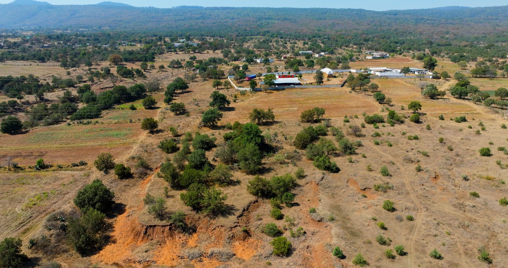
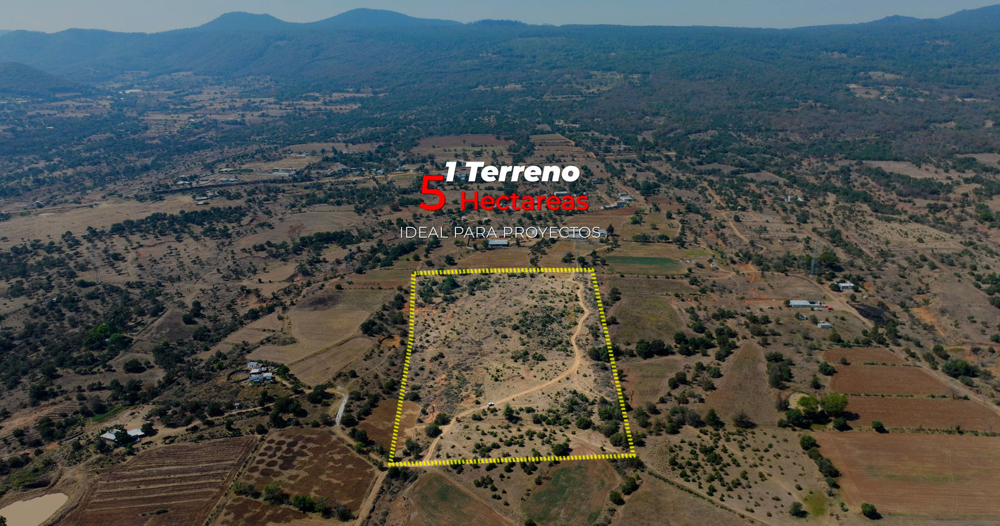
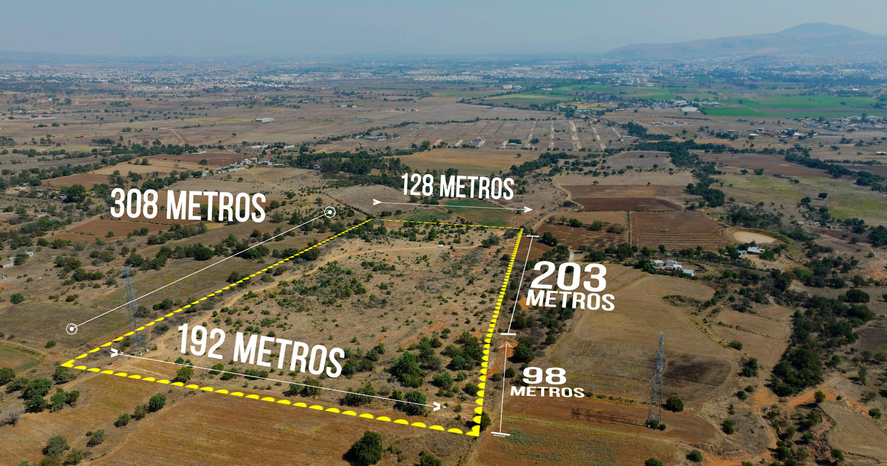
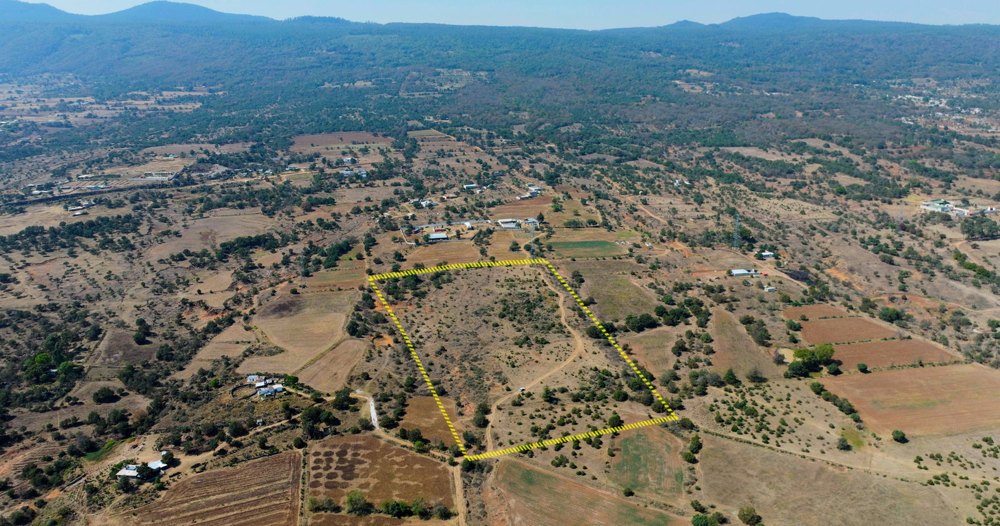
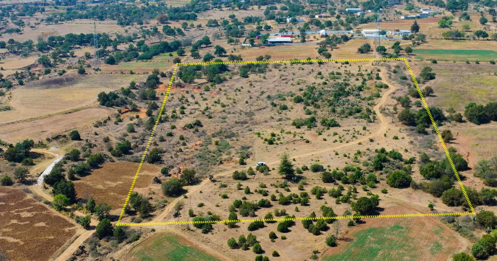

Escala y contexto
El terreno completo, leído desde el aire.
La cobertura aérea permite entender su relación con caminos, parcelas vecinas y el valle de Tulancingo en una sola vista.
Terreno en venta · Ficha técnica
Un predio de escala real, documentado para tomar decisiones con datos.
Calle Las Torres · Santiago Tulantepec
El predio combina amplitud, acceso regional y flexibilidad de uso. Su geometría está respaldada por un levantamiento georreferenciado con coordenadas UTM y un polígono digital para revisión técnica.
Lectura aérea / 02
Escala y contexto
La cobertura aérea permite entender su relación con caminos, parcelas vecinas y el valle de Tulancingo en una sola vista.
Geometría verificable
El plano de marzo de 2025 registra 51,154.01 m² y cinco colindancias. La visualización aérea traduce esos datos a una lectura inmediata.
Potencial de proyecto
Venta completa o análisis de fraccionamiento en hasta cinco lotes de aproximadamente una hectárea, sujeto a factibilidad y autorizaciones aplicables.
Datos antes que adjetivos
Polígono irregular de cinco lados.
Colindancia poniente / Calle Las Torres.
Coordenadas geográficas WGS84.
Potencial habitacional o de cultivo, sujeto a dictámenes.
Material disponible para revisión técnica del interesado.
Las superficies y medidas aquí mostradas provienen del plano georreferenciado elaborado en marzo de 2025. Cualquier proyecto, subdivisión, uso de suelo o disponibilidad de servicios debe validarse ante las autoridades y prestadores correspondientes.
Zona metropolitana de Tulancingo
Ubicado en Santiago Tulantepec de Lugo Guerrero, Hidalgo. El mapa muestra el polígono digital derivado de las coordenadas impresas en el plano.
Distancias regionales aproximadas por carretera. Confirmar ruta y tiempo al momento de la visita.
Registro aéreo real
Ocho perspectivas del mismo predio y su contexto inmediato.





Información para avanzar
Medidas, vértices, cuadro de construcción y colindancias.
Archivo KMZ/KML para revisión en Google Earth o software GIS.
Certificado 2019 sin reporte de gravamen; se recomienda actualización durante la debida diligencia.
Fotografía y video del predio para lectura remota del sitio.
Visita · expediente · información comercial
Solicita información comercial, agenda una visita o pide acceso al expediente técnico del terreno.